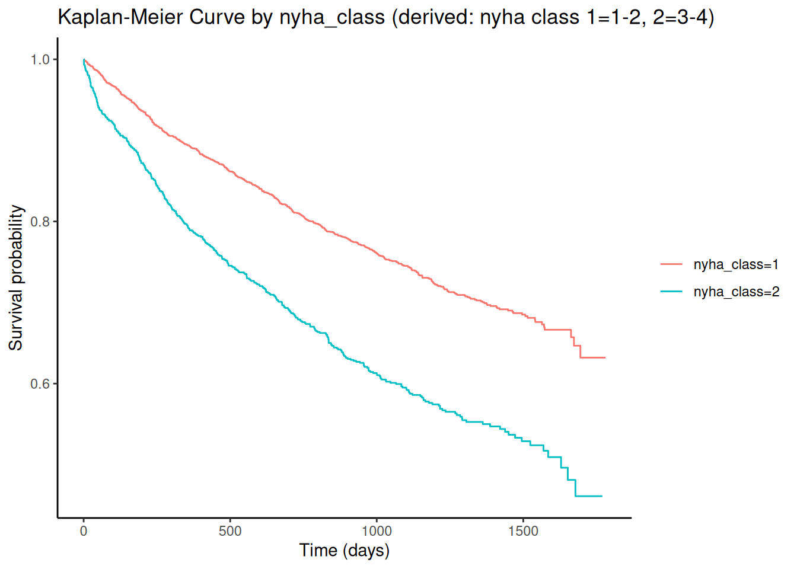
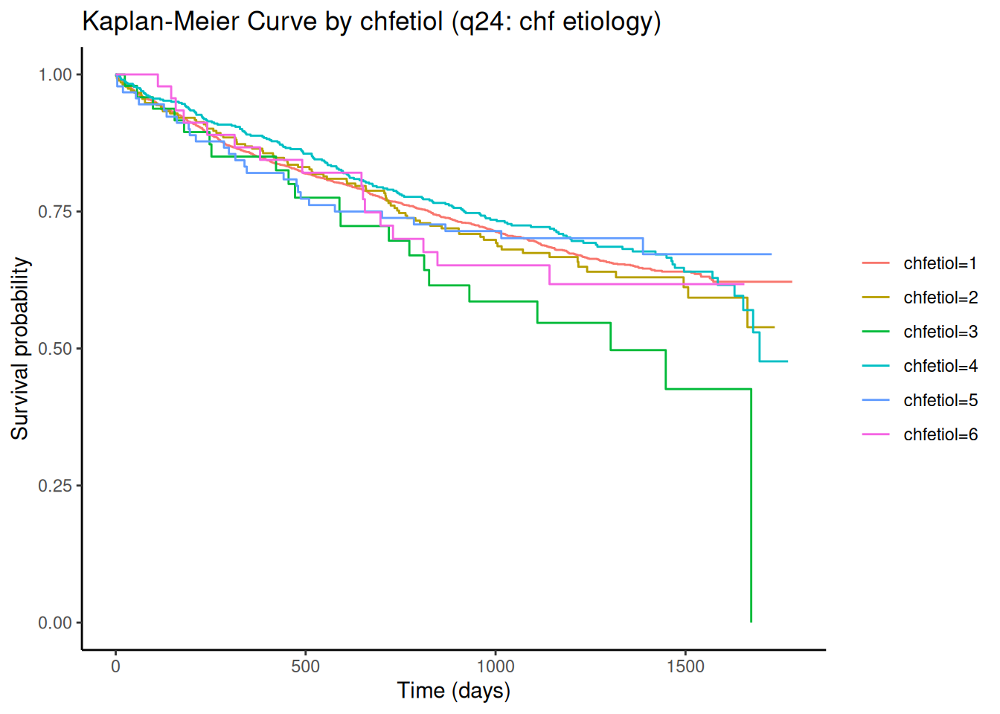
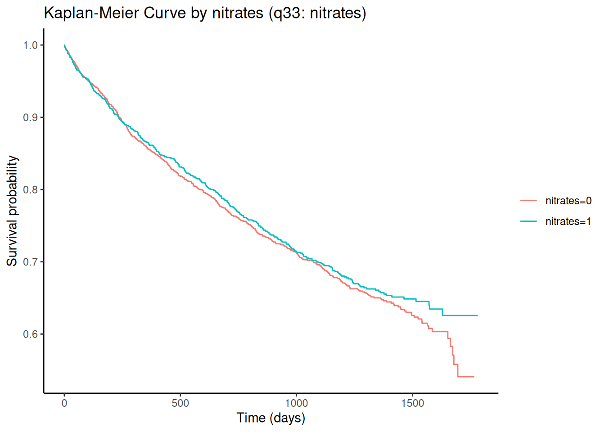
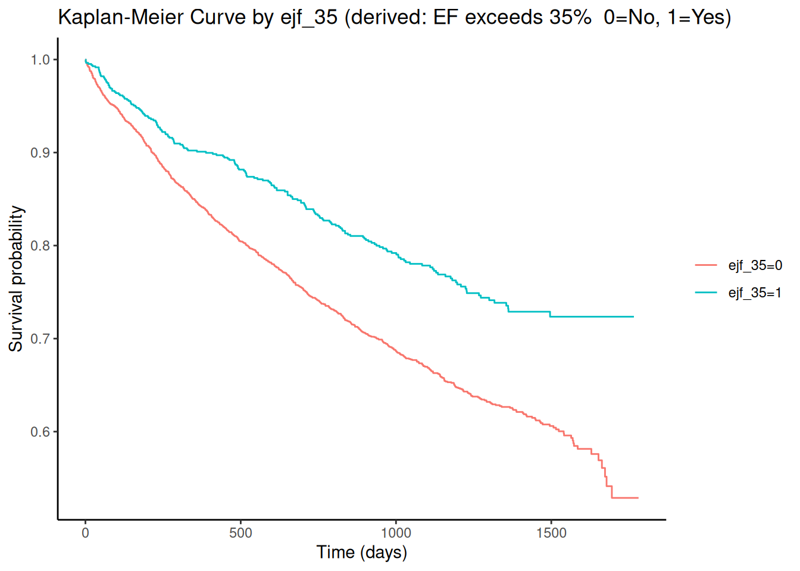
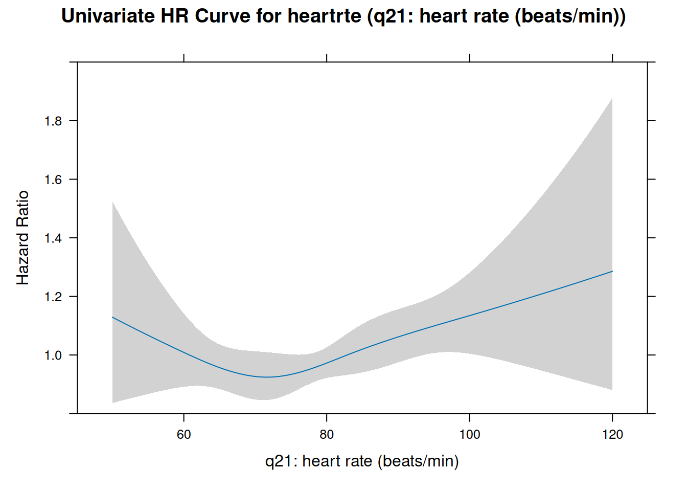
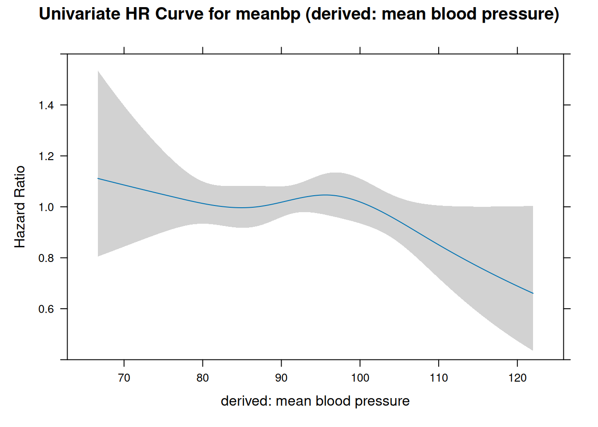

Team Assignment #3: Outcome - death or hosp from HF
Code
suppressPackageStartupMessages(library(dplyr))suppressPackageStartupMessages(library(kableExtra))suppressPackageStartupMessages(library(survival))suppressPackageStartupMessages(library(ggsurvfit))suppressPackageStartupMessages(library(broom))suppressPackageStartupMessages(library(broom.helpers))suppressPackageStartupMessages(library(targets))suppressPackageStartupMessages(library(gtsummary))suppressPackageStartupMessages(library(rms))tar_load(lista_zmiennych)tar_load(zm_kategoryczne)tar_load(df_trtmt)tar_load(dd_df_trmnt)options(datadist ="dd_df_trmnt") # for the rms packagedwhf_surv <-with(df_trtmt, Surv(dwhfdays,dwhf))
Założenia
Wśród osób zrandomizowanych w badaniu DIG do grupy leczonej digoksyną chcemy zidentyfikować określić, które cechy wiązały się z dobrą odpowiedzią na terapię digoksyną.
Dobrą odpowiedź na leczenie definiujemy jako
przeżycie i brak hospitalizacji z powodu niewydolności serca
Implementacja
W zbiorze danych DIG jednym z punktów końcowych był “zgon lub hospitalizacja z powodu nwd. serca”. Ten punkt końcowy reprezentowany jest przez następujące zmienne:
Wykresy K-M dla zmiennych-kandydatów kategorycznych
Code
dwhf_km_1v <-function(var_name) {# Extract label attribute (if present) var_label <-attr(df_trtmt[[var_name]], "label")# Fallback if label is missingif (is.null(var_label)) { var_label <- var_name } formula <-as.formula(paste("dwhf_surv ~", var_name)) model <-survfit(formula, data = df_trtmt) model %>%ggsurvfit() +labs(title =paste0("Kaplan-Meier Curve by ", var_name, " (", var_label, ")"),x ="Time (days)",y ="Survival probability" ) +theme_classic()}
Code
vars_to_plot <-intersect(candidate_vars, zm_kategoryczne)for (var in vars_to_plot) {print(dwhf_km_1v(var))}




Wykresy jednoczynnikowych m. Coxa dla zmiennych ciągłych
Code
dwhf_cox_1v_plot <-function(var_name) {# Use the label if available var_label <-attr(df_trtmt[[var_name]], "label")if (is.null(var_label)) var_label <- var_name formula <-as.formula(paste0("dwhf_surv ~ rcs(", var_name, ", 4)")) model <-cph(formula, data = df_trtmt, x =TRUE, y =TRUE, surv =TRUE) pred <-eval(substitute(Predict(model, v, fun = exp), list(v =as.name(var_name))))plot(pred,xlab = var_label,ylab ="Hazard Ratio",main =paste0("Univariate HR Curve for ", var_name, " (", var_label, ")"))}
Code
vars_to_plot <-setdiff(candidate_vars, zm_kategoryczne)for (var in vars_to_plot) {print(dwhf_cox_1v_plot(var))}


Wyniki jednoczynnikowych regresji m. Coxa
W tabeli wyniki regresji jednoczynnikowych m. Coxa dla zdarzenia dwhf oraz wybranych zmiennych - kandydatów na predyktorów.
Code
dwhf_cox_1v <-function(var_name) { formula <-as.formula(paste("dwhf_surv ~", var_name)) model <-coxph(formula, data = df_trtmt) res <- broom::tidy(model, conf.int =TRUE)# Add var_name as a column — even if multiple levels res$var_names <- var_name# Optional: remove the intercept row if it's ever present res <- res[res$term !="(Intercept)", ]data.frame(var_names = var_name,level = res$term,hr =round(res$estimate, 3),hr_ci_lo =round(res$conf.low, 3),hr_ci_up =round(res$conf.high, 3),p_value =signif(res$p.value, 3) )}results <-do.call(rbind, lapply(candidate_vars, dwhf_cox_1v)) %>%left_join(lista_zmiennych, by='var_names') %>%select(var_names, var_labels, level, everything())results %>%kable(digits=3) %>%kable_classic_2()
var_names
var_labels
level
hr
hr_ci_lo
hr_ci_up
p_value
age
calculated: age at randomization
age
0.001
-0.004
0.007
0.646
sex
q4: sex, 1=male 2=female
sex2
0.153
0.012
0.294
0.034
race
q5: race, 1=white 2=nonwhite
race2
0.335
0.176
0.494
0.000
ejf_per
q3: ejection fraction (percent)
ejf_per
-0.034
-0.041
-0.027
0.000
chestx
q6: chest x-ray (ct-ratio)
chestx
4.253
3.469
5.037
0.000
bmi
calculated: body mass index (kg/m*m)
bmi
0.005
-0.007
0.016
0.421
creat
q9: serum creatinine (mg/dl)
creat
-0.102
-0.271
0.067
0.236
klevel
q9a: serum potassium level
klevel
0.002
-0.125
0.128
0.980
chfdur
q12: duration of chf (months)
chfdur
0.000
-0.002
0.002
0.992
nsym
calculated: sum of q13-q20, y/n status
nsym1
0.566
-0.272
1.405
0.185
nsym
calculated: sum of q13-q20, y/n status
nsym2
0.358
-0.424
1.140
0.369
nsym
calculated: sum of q13-q20, y/n status
nsym3
0.665
-0.100
1.431
0.088
nsym
calculated: sum of q13-q20, y/n status
nsym4
0.584
-0.160
1.328
0.124
heartrte
q21: heart rate (beats/min)
heartrte
0.004
-0.001
0.009
0.121
diabp
q22: diastolic bp (mmhg)
diabp
-0.006
-0.011
-0.001
0.029
sysbp
q22: sysolic bp (mmhg)
sysbp
0.001
-0.002
0.004
0.606
meanbp
derived: mean blood pressure
meanbp
-0.004
-0.010
0.002
0.203
nyha_class
derived: nyha class 1=1-2, 2=3-4
nyha_class2
0.569
0.446
0.693
0.000
chfetiol
q24: chf etiology
chfetiol2
0.073
-0.153
0.298
0.529
chfetiol
q24: chf etiology
chfetiol3
0.490
0.056
0.924
0.027
chfetiol
q24: chf etiology
chfetiol4
-0.060
-0.232
0.112
0.497
chfetiol
q24: chf etiology
chfetiol5
-0.051
-0.435
0.333
0.793
chfetiol
q24: chf etiology
chfetiol6
0.109
-0.386
0.605
0.665
prevmi
q25: previous myocardial infarction
prevmi1
0.068
-0.060
0.195
0.300
angina
q26: current angina
angina1
-0.073
-0.212
0.065
0.298
diabetes
q27: history of diabetes
diabetes1
0.005
-0.129
0.139
0.941
hyperten
q28: history of hypertension
hyperten1
0.002
-0.120
0.124
0.978
diguse
q29: digoxin within past week
diguse1
0.450
0.328
0.572
0.000
diuretk
q30: potassium sparing diuretics
diuretk1
-0.101
-0.343
0.142
0.415
diuret
q31: other diuretics
diuret1
0.962
0.772
1.152
0.000
ksupp
q31a: potassium supplements
ksupp1
0.578
0.447
0.709
0.000
aceinhib
q32: ace inhibitors
aceinhib1
-0.086
-0.335
0.163
0.498
nitrates
q33: nitrates
nitrates1
-0.055
-0.179
0.068
0.382
hydral
q34: hydralazine
hydral1
0.765
0.437
1.094
0.000
vasod
q35: other vasodilators
vasod1
-0.580
-1.383
0.222
0.157
any_diuret
derived: positive diuretk or diuret
any_diuret1
0.991
0.783
1.199
0.000
any_vasod
derived: positive nitrates or hydral or vasod
any_vasod1
-0.011
-0.133
0.112
0.865
ejf_35
derived: EF exceeds 35% 0=No, 1=Yes
ejf_351
-0.475
-0.632
-0.318
0.000
chestx_55
derived: ct-ratio exceeds 0.55 0=No, 1=Yes
chestx_551
0.510
0.388
0.631
0.000
Model wieloczynnikowy, po selekcji kandydatów
Code
m1 <-cph(dwhf_surv ~ age + sex + race +scale(ejf_per, scale=F) *scale(chestx, scale=F) + bmi + functcls + diguse + diuret + aceinhib + prevmi + diabetes + hyperten,data = df_trtmt, x =TRUE, y =TRUE, surv =TRUE)concordance(m1)
Abbreviations: CI = Confidence Interval, HR = Hazard Ratio
Interpretacja
Przypomnienie naszej definicji dobrej odpowiedzi – brak zgonu oraz hospitalizacji z powodu zaostrzenia niewydolności serca .
W powyższym modelu wieloczynnikowym z występowaniem dobrej odpowiedzi na terapię digoksyną były:
rasa biała
wyższa frakcja wyrzutowa
niższy wskaźnik sercowo-płucny w rtg
niższa klasa czynnościowa wg nyha
niestosowanie digoksyny w tygodniu poprzedzającym randomizaję
niestosowanie diuretyków
Na występowanie dobrej odpowiedzi nie wpływały czynniki takie jak: wiek, płeć, BMI, stosowanie ACE-I, przebyty zawał, cukrzyca w wywiadzie, nadciśnienie w wywiadzie.
Do zrobienia: porównanie 1-rocznego event-free survival przykładowych osób z profilem związanym z niskim ryzykiem (np. biały z wysoką EF, NYHA II, diuretyków) vs osoba z profilem przeciwnym (non-white, EF 20%, NYHA IV, itp.)